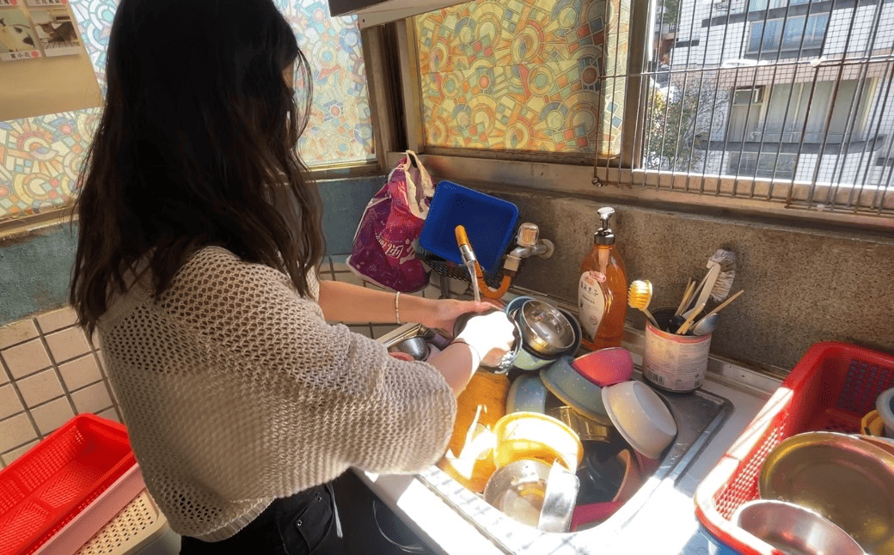
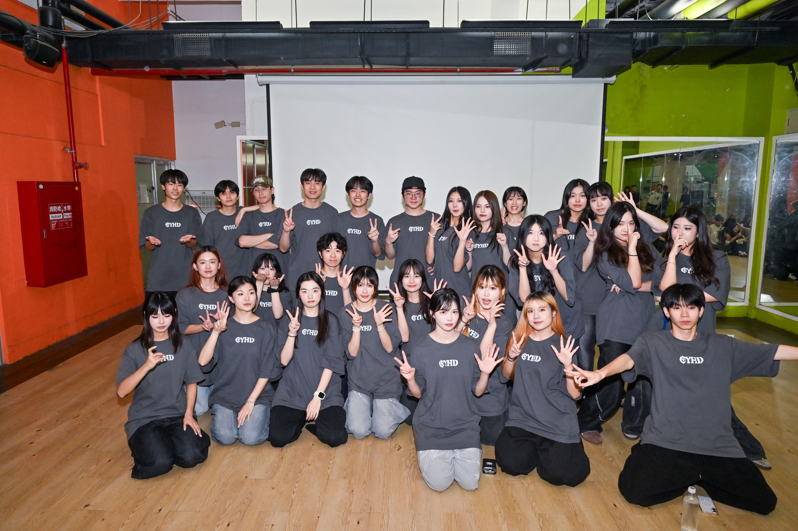
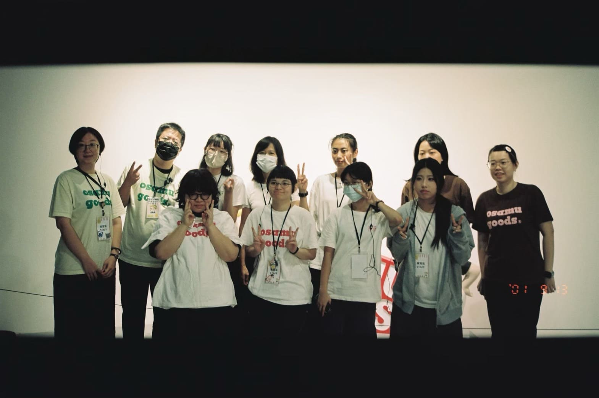
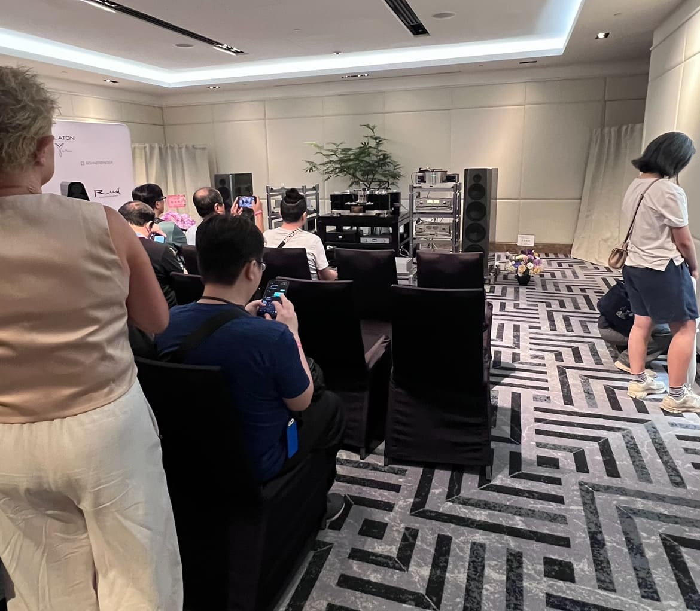
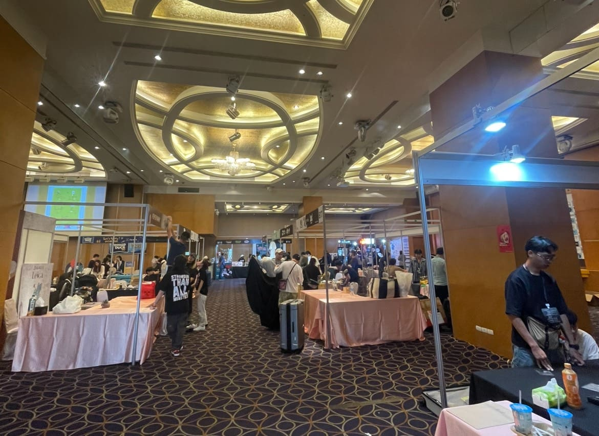

關於我
個人基本資料
大家好，我是黃子容，目前就讀於中原大學資訊管理學系二年級。 我是一個自由外向、充滿朝氣的人，喜歡接觸新事物，也樂於認識不同的人。
在團體中，我擅長傾聽他人的想法，朋友也經常願意與我分享生活中的大小事。 課業之外，我也積極參與社團活動，透過團隊合作與活動籌辦累積經驗。 我相信每一次的嘗試都是成長的機會，希望未來能持續探索自己的可能性， 培養更多專業能力，成為一個兼具創意、溝通能力與行動力的人。
個人簡介與目標
專注於提升個人能力與累積專案經驗，希望能將課堂中學習到的知識實際運用在不同的專案與活動中。 透過參與團隊合作，培養溝通協調、問題解決及時間管理能力，並從每一次的挑戰中學習與成長。 我也期望能接觸更多不同領域的知識，拓展自己的視野，持續發掘自身的優勢與潛力。
未來希望能在資訊管理相關領域發揮所長，將專業知識與創意結合，累積更多實務經驗， 成為一位具備專業能力、團隊合作精神與執行力的人。
特殊技能
程式專業
個人專業
個人經驗

活動經驗-管理學服務學習
在管理學專案中我們到一間偏遠的貓舍進行一天的志工服務。 儘管已是獨棟的貓舍，貓咪的數量卻多到依然顯得擁擠。 我們一起分工洗了貓盆、掃了地、換了貓砂、給了糧食和水， 僅僅是一上午我們六個便覺得筋疲力盡，但卻是負責人每天一個人都在做的事。

社團活動-熱舞社
曾於中原大學熱舞社擔任執行秘書，負責社團行政事務、會議紀錄、 活動流程協調及各組溝通聯繫，協助維持社團日常運作與活動進行。 透過這段經驗，培養了良好的溝通協調、組織規劃及時間管理能力， 也學會在團隊合作中主動解決問題、承擔責任。
● 工作經歷

OSAMA GOODS 展覽工作人員
協助展覽現場營運與秩序維護，確保參觀民眾能順利參與展覽， 並即時處理現場狀況，維持良好的參觀環境。

TAA國際音響展工作人員
負責展場動線引導與參觀者接待，協助民眾了解展場配置及展區位置， 提供清楚的方向指引，維持現場參觀動線順暢。

文博會攤位銷售工讀生
負責展場商品介紹、銷售及顧客服務，協助顧客了解商品特色並完成購買流程， 累積現場銷售與溝通應對經驗。